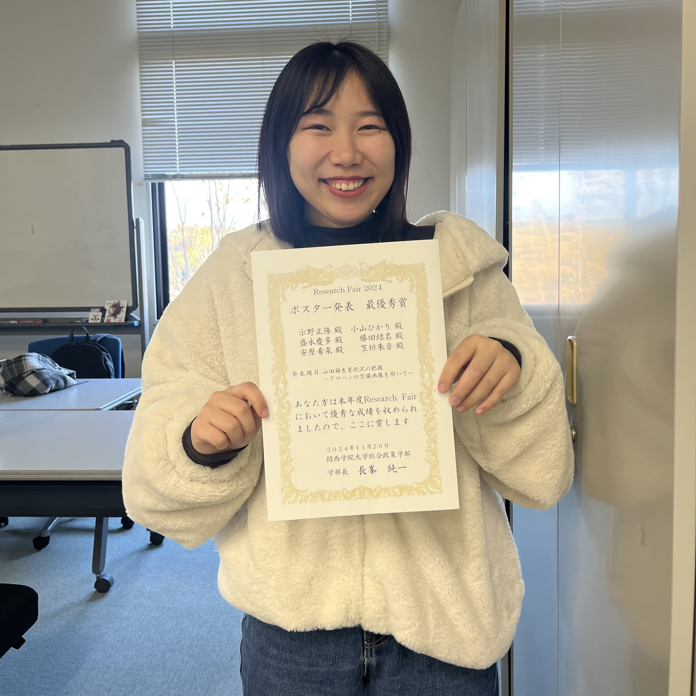
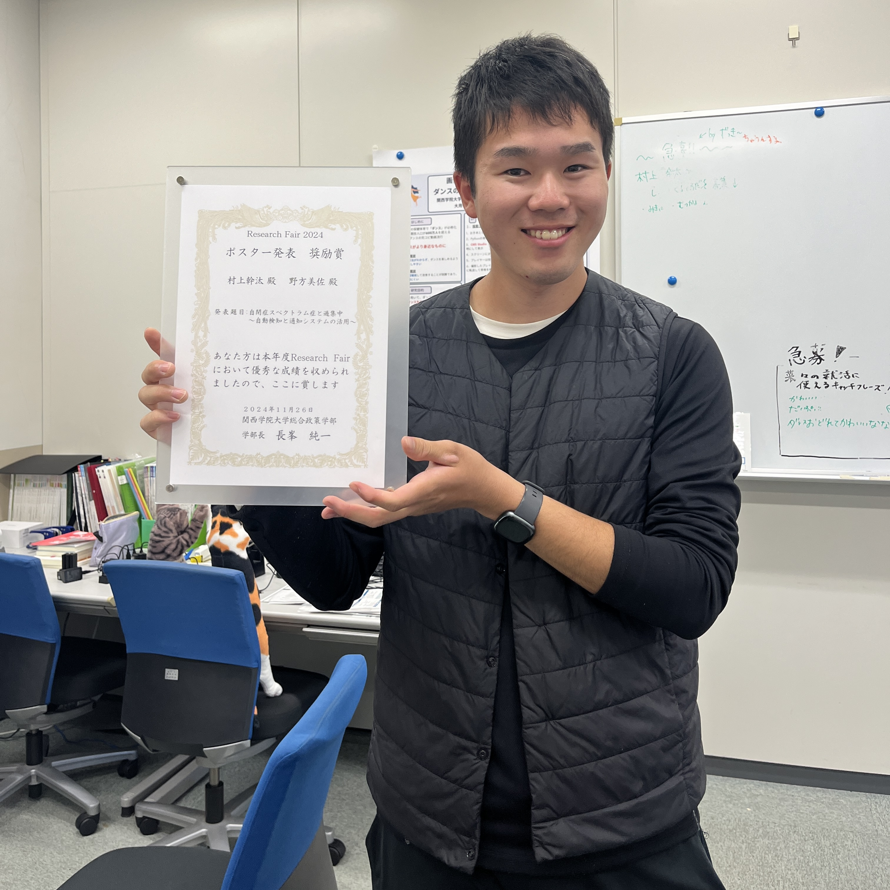

大用ゼミから2チームがリサーチ・フェアで受賞！
チャペルアワーにて授賞式が開催（2024年11月26日）
2024年11月26日（火）、関西学院大学にてリサーチ・フェアの授賞式がチャペルアワー（Ⅱ-201教室）にて行われました。本フェアは、学生たちの独自の研究活動を学内外に発信する機会として開催され、多くの優れた研究が発表されました。
今年度、大用ゼミからは2組のチームが受賞する快挙を成し遂げました。

▲ 最優秀賞を受賞した笠垣朱音さん
ポスター発表部門において、笠垣朱音さんが山田ゼミと合同で取り組んだ「山田錦生育状況の把握～ドローンの空撮画像を用いて～」が最優秀賞を受賞。農業×テクノロジーの視点から、酒米「山田錦」の生育を効率的にモニタリングする方法を提案し、高い実用性と独創性が評価されました。

▲ 奨励賞を受賞した村上幹汰さん
また、村上幹汰さんと野方美佐さんのチームによる「自閉症スペクトラム症と過集中 ～自動検知と通知システムの活用～」が奨励賞を受賞しました。ASD傾向を持つ人々の“過集中”状態をテクノロジーでサポートする革新的なアプローチは、福祉・教育の分野でも大きな期待が寄せられています。
大用ゼミでは、学生の自主性と問題意識を尊重した研究活動が推奨されており、今回の受賞はその成果の一端といえます。今後のさらなる活躍にも注目です。